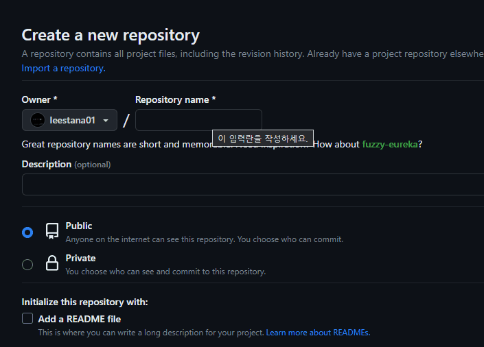

[선행 조건]
먼저 다음의 방식을 통해
본인의 Repository가 웹페이지를 생성할 수 있도록 할 수 있습니다.
1. Github에 Repository 생성
2. html 및 css 파일 업로드
3. 상단의 Settings 메뉴 -> 좌측 Pages 메뉴
-> Branch를 None에서 master 또는 main으로 변경
이후 본인의 페이지가 생성됩니다.
그 후 본인의 Repository 주소를 위 페이지에 입력하면 정상적인 링크가 출력됩니다.
